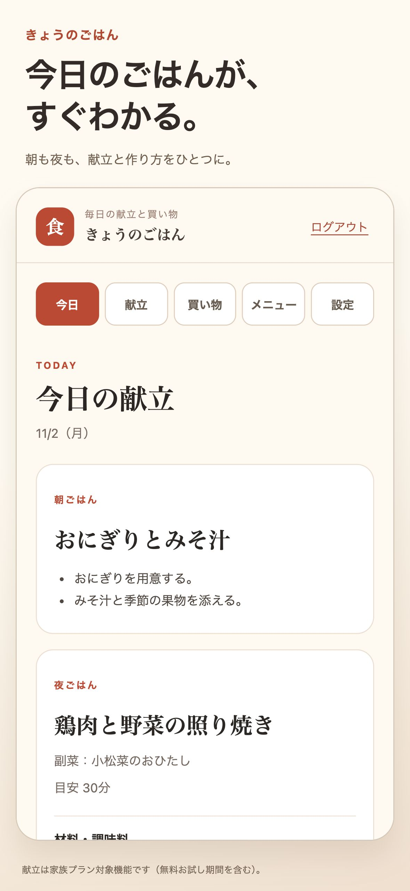

きょうのごはん / APP STORE DESIGN
毎日のごはんを、もっと軽やかに。
大きな見出しと、料理を思わせる鮮やかな5色。実際のアプリ画面を主役にしました。
架空データで表示した掲載案です。Appleへの登録と実機での最終照合はまだ行っていません。
iPhone / 5枚


iPad / 5枚


前の案と比べる

きょうのごはん / APP STORE DESIGN
大きな見出しと、料理を思わせる鮮やかな5色。実際のアプリ画面を主役にしました。
架空データで表示した掲載案です。Appleへの登録と実機での最終照合はまだ行っていません。
